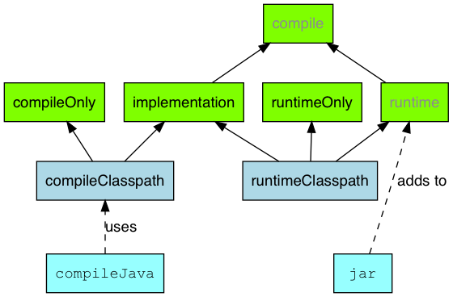
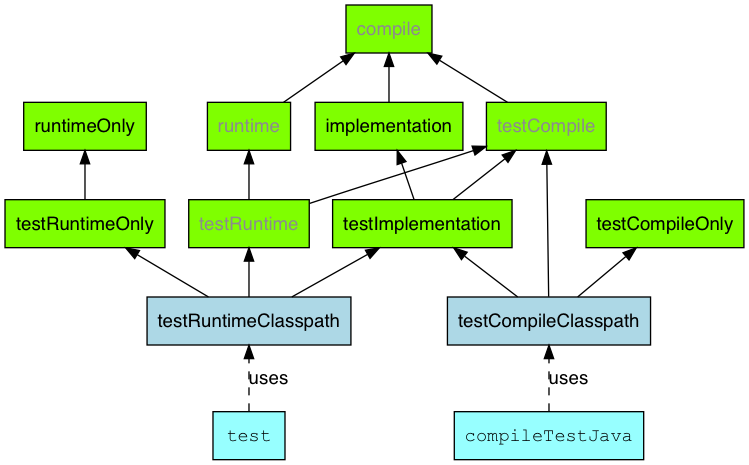

在上一篇文章中，我们在没有使用任何插件的情况下，练习了使用 Gradle 构建 Java 项目，最后得到一个脆弱的构建脚本和不符合约定的目录结构。
对此，Gradle 使用了插件来解决这些问题。
插件
Gradle 中的插件，可以给我们带来很多好处，包括：
- 添加
Task - 添加领域对象
- 约定优于配置的实现
- 扩展
Gradle的核心类
Gradle 将插件分为两类，Script Plugin & Binary Plugin。
那些写到单独的 gradle 文件中，并被 build.gradle 文件使用的脚本文件，就是 Script Plugin。常见的实践是将某一插件或某一方面的配置写到单独的文件中，比如 jacoco.gradle，然后通过下面的语法导入到 build.gradle 文件中：
1 | apply from: file("$projectDir/gradle/jacoco.gradle") |
而常见的 java、idea 这样的 core Plugin 和 org.springframework.boot 等可以在 https://plugins.gradle.org/ 找到的插件，就是 Binary Plugin，它们通过 plugins{} 语法块引入：
1 | plugins { |
接下来，我们接着上一篇文章的例子，使用 Java Plugin 来改造我们的构建脚本。
改造 Hello World
Java 插件的文档：https://docs.gradle.org/current/userguide/java_plugin.html
Import Java Plugin
如上所述，我们使用 Java Plugin 需要先导入它：
1 | plugins { |
因为 Java 插件是 Gradle 提供的核心插件，它是和 Gradle 版本绑定的，所以不需要使用 version 参数。
SourceSet
引入 Java 插件后，我们先来了解一个核心概念：SourceSet。这是 Java 插件引入的概念，每一个 SourceSet 都包含了一组相关的资源。默认情况下，一个 SourceSet 对应 src 目录下的一个目录，目录名称就是 SourceSet 的名称；目录下会有一个 java 目录和一个 resources 目录。根据约定，这两个目录分别是存放 java 文件的目录和存放配置等资源文件的目录。
SourceSet 还有更多的信息可以配置，参见：https://docs.gradle.org/current/userguide/building_java_projects.html#sec:java_source_sets
Java 插件还默认配置好了两个 SourceSet，分别是 main & test。所以在使用 Java 插件后，无需任何配置，就可以得到约定的目录结构：
1 | ❯ tree src |
所以，我们需要将 HelloWorld.java 从 src 目录移动到符合约定的 src/main/java 目录下：
1 | ❯ tree src |
Task
Java 插件引入的 Task
接着我们来看看 Task 需要做哪些修改。
Java 插件引入了下面的这些 Task，并且添加了依赖关系：

其中有四个 task 是由 base plugin 添加的：clean, check, assemble 和 build。
其中，check, assemble 和 build 是 lifecycle task，本身不执行任务，只是定义了执行它们时应该执行什么样的任务：
check：聚合所有进行验证操作的task，比如测试assemble：聚合所有会产生项目产出物的task，比如打包build：聚合前面两个task
其他的 task 中，很容易发现，compileJava 与 compileTestJava、processResources 与 processTestResources、classes 与 testClasses 命名类似。实际上，每一对 task 表达的是同样的含义，只是一个针对 main sourceSet，一个针对 test sourceSet 而已。如果你创建了一个自定义的 SourceSet，那 Java 插件会自动的添加 compileSourceSetJava、processSourceSetResources 和 sourceSetClasses，其中的 sourceSet 就是 SourceSet.name。
compileJava：编译该sourceSet下的java文件processResource：将该sourceSet中的资源文件复制到build目录中classes：准备打包和执行需要的class文件和资源文件
注意，执行测试是
test任务，它没有因为添加sourceSet而自动添加sourceSetTest方法。因为自定义的SourceSet不一定是组件测试之类的不同类别的测试。所以，如果你添加了这样的SourceSet，需要自己手动编写Test类型的测试task。
改进 Hello World
由上面的了解可知，Java 插件已经为我们添加了 compileJava 和 jar 这两个 task，所以我们不需要再创建这样的 task。但是我们还是可以对这些 task 进行配置。
比如，我们仍然希望控制 jar 产出的文件名，那我们的脚本就可以改成这样：
1 | // task compileJava(type: JavaCompile) { |
其中注释的部分可以删除，这里仅仅作为修改前后的对比。
根据 assemble 的定义，我们的 fatJar 的输出应当看作项目的产出物，所以需要让 assemble 依赖于 fatJar ：
1 | assemble.dependsOn fatJar |
Dependency Configuration
Java 插件引入的 Configuration
上一篇文章讲到，在 Gradle 中声明依赖，需要关联到 configuration。Java 插件也提前为我们设计了一些 configuration，他们的主要关系可以通过两幅图来表示。
与 main sourceSet 相关的：

其中：
- 灰色文字表示已经被废弃的
configuration - 绿色表示用于声明依赖的
configuration - 蓝灰色表示给
task使用的configuration - 浅蓝色表示
task
由这个图，我们就能看出声明到不同 configuration 中的依赖最终会在什么地方使用到。
与 test sourceSet 相关的：

其中的字体和颜色与上一张图一致。
我们可以看到，除去 compile, implementation, runtime 和 rumtimeOnly，其他的 configuration 与上图几乎一致。这里画出他们，仅仅是为了展示出扩展关系而已。
如果你使用过以前版本的
Gradle，想必会比较好奇为什么Compile会被废弃。这其实是出于构建工具的性能的考虑，关闭掉不必要的传递依赖。
你也许也发现了，和 task 一样，有一些名称相近的 configuration，所以很自然的推测：添加了自定义的 SourceSet 后，Java 插件会自动的添加一些 configuration。这些 sourceSet configuration 都可以在 Java 插件的页面上找到。
改进 Hello World
首先，我们可以直接使用 Java 插件提供的 implementation，而不需要自己创建任何 configuration:
1 | // configurations { |
同样，注释只是为了对比。
接着，我们的 fatJar 也不能再使用 forHelloWorld 这个 configuration，但也不能直接使用 implementation，而应该使用 runtimeClasspath 这个给 task 消费的、语义更符合我们使用目标的 configuration：
1 | task('fatJar', type: Jar) { |
总结
经过使用 Java 插件，并对构建脚本的修改，我们得到了更具有鲁棒性、实现了约定优于配置的构建脚本。
完整的脚本如下：
1 | plugins { |